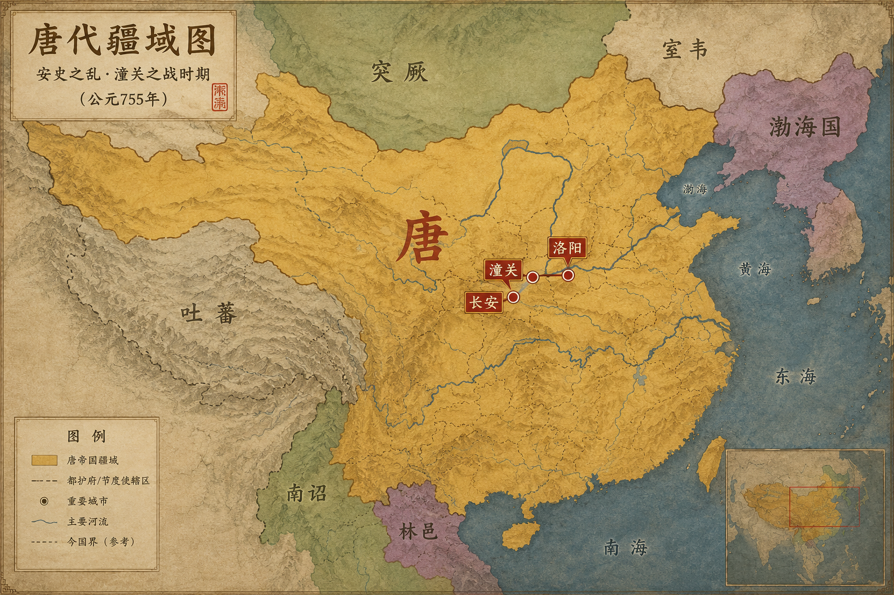
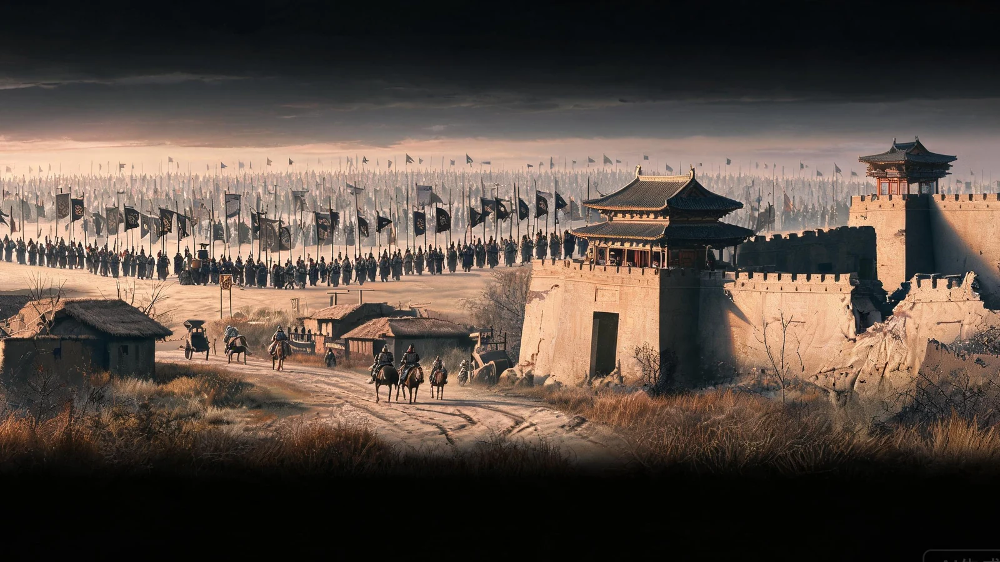
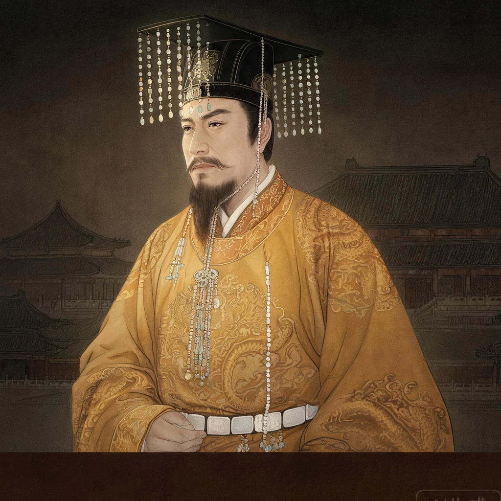
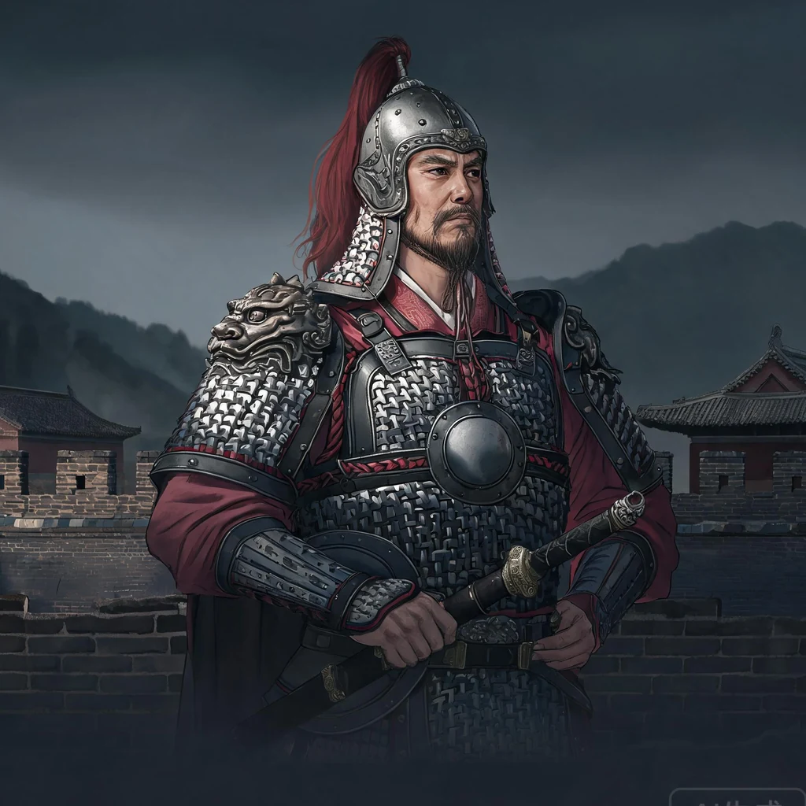
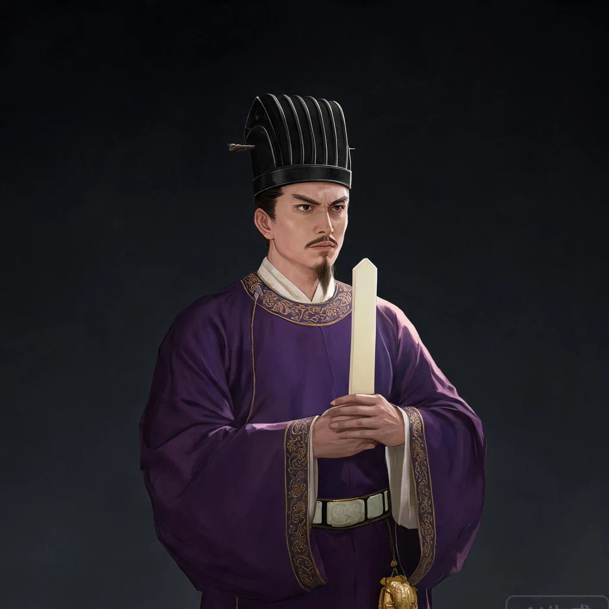
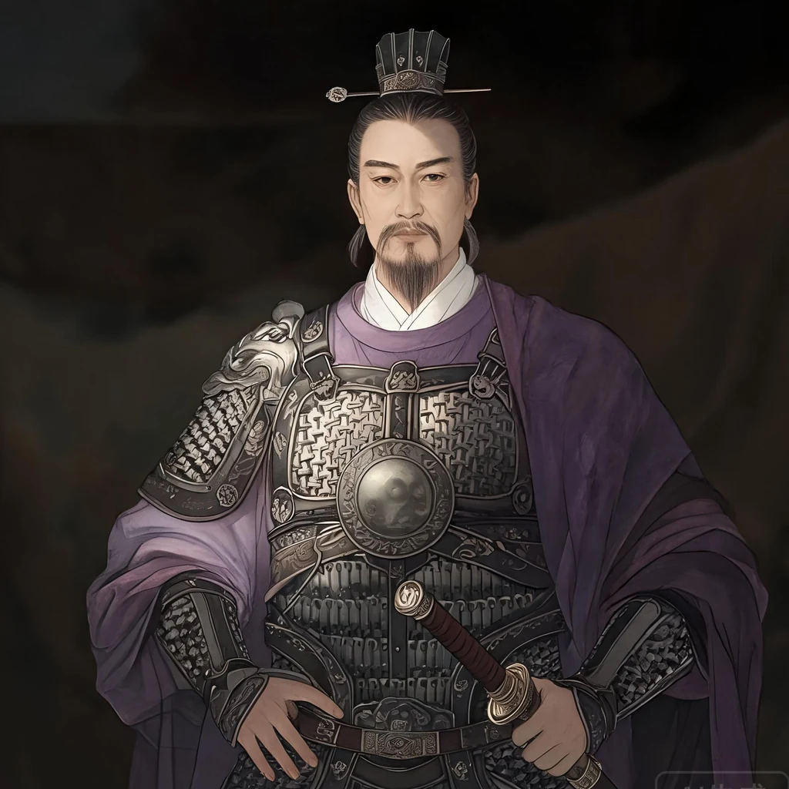
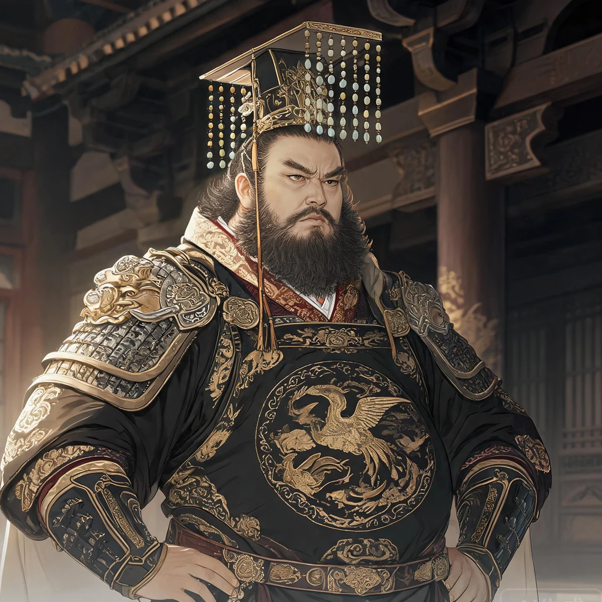

召见与群议单独问策、秘密交代，或让多名大臣当殿争论。
01 · 项目是什么
不是历史问答，而是一台会回应玩家的国家机器
玩家从天宝十五载潼关危局开始，以皇帝身份召见人物、组织朝议、拟写诏书并推进回合。人物会依据身份、立场、关系与当前局势回应；战争、财政、民心和军令则由规则系统持续结算。

外行人可以这样理解
它像一场由 AI 即兴扮演角色的历史桌游：AI 负责让人物“活起来”，程序规则负责确保钱粮、兵力和胜负不会被一句漂亮话随意改变。
自由拟诏不用点固定选项，直接写自己的命令，由系统解析并确认。
天下推演地图控制、军队、粮道、民变和事件随回合变化。
02 · 项目定位与特点
在历史危局中，用自己的话治理一个国家
项目面向喜欢历史、策略与角色互动的玩家。核心不是复述安史之乱，而是让玩家进入潼关之战的决策现场：面对彼此冲突的大臣、延迟失真的军报和有限的钱粮，尝试让历史走向不同结局。
玩家到底在玩什么？
玩家扮演大唐最高决策者。每个回合先了解天下与朝堂，召见人物、组织多人议政，再用自然语言写下诏令。系统随后结算军政后果，人物会记住承诺与冲突，下一回合继续回应新的局势。
查看局势→召见群臣→自由拟诏→回合结算→历史分歧
弱化固定选项，玩家通过问话、试探、许诺和命令推动游戏。
角色拥有身份、派系、立场、关系与记忆，可能隐瞒、争执或反对。
关键年份与事件提供约束，但行动结果可以形成反事实分支。
模型创造自然互动，规则保证数值、存档与结果可信。
03 · 核心架构
硬规则守住底线，推演模型让世界产生反应
系统不是让模型随意写存档，也不是把模型降级成文案工具。确定性规则先处理兵力、钱粮、路线与战斗；推演模型再分析人物意图、派系博弈和社会反应，提出结构化状态变化，最后由本地校验器审核后写入。
玩家行动
自由问话、多人朝议、诏书与军事命令。
硬规则结算
确定兵力、钱粮、路线、补给和战斗结果。
LLM 世界推演
提出民心、军心、人物态度、NPC 行动与事件伏线。
本地校验
检查路径白名单、置信度、目标和单回合幅度上限。
应用与存档
只写入审核通过的变化，并生成纪事与自动存档。
受约束的世界裁判
模型可以影响地区民心、动乱、城防，军队士气、补给，持续事项压力、人物忠诚；不能修改现金、粮仓、兵力、日期、章节或硬规则战果。越权、低置信度和超限提案会被拒绝或裁剪，拒绝原因也保存在回合结果中。
04 · 多模型分工
不是一个模型包办一切
不同任务对模型能力、速度和成本的要求不同。项目允许三类模型分别配置供应商、接口和型号，也可以在没有配置时使用统一回退模型。
对话模型高人设一致性
让历史人物根据场景说不同的话
朝堂上顾及君臣名分，密诏中可以坦率谈隐忧，远奏则承认消息迟滞。多人朝议时，后发言者还能读取前臣意见并附和或反驳。
人物设定 + 当前局势 + 关系记忆 + 场景规则 → 角色回答推演模型长上下文与多因素
作为受约束的世界裁判
读取硬规则结算、完整国势、战役状态与事件时钟，输出 JSON 形式的软世界变化、NPC 行动和事件种子。本地校验器逐项审核，只有合法变化会进入权威状态；最终纪事依据应用后的结果生成。
硬结算 + 全局状态 → JSON 提案 → 白名单审核 → 状态变化 + NPC 动向 + 事件伏线文书模型低成本高频调用
处理不需要最强推理的日常工作
把玩家口语命令润色成诏书，整理奏折，压缩长期对话，维护可检索记忆。它降低主模型负担，也控制总体调用成本。
口语旨意 → 保留人名、数字与行动 → 唐廷诏书05 · 两天如何完成
Codex 不是代写工具，而是开发编排器
主 Agent 负责理解目标、拆解工作、整合代码和验收；子 Agent 并行处理架构审计、数值设计与 LLM 运行时。人的工作从逐行编码转向产品判断、约束设定和结果验收。
把模糊想法变成可执行设计
- 审计参考项目的架构与性能问题
- 整理安史之乱时间线、人物和军政数据
- 设计五幕战役、数值系统与事件时钟
- 确定“对话优先、规则托底”的产品方向
从骨架到可运行游戏
- 建立 FastAPI、React 与确定性回合引擎
- 接入人物对话、群议、诏书和多模型配置
- 生成 31 张人物立绘及场景背景
- 完成存档、战役章节、地图和自动测试
Codex 主 Agent拆解、决策、集成、修复与交付
架构审计子 Agent找出参考项目中可复用和应重构的部分
数值设计子 Agent战役、人物、军队、地区与事件数据
LLM 运行时子 Agent人物语境、联网回退与调用安全边界
06 · 生成式美术
Seedream 5.0 让原型具备统一视觉语言
围绕唐代历史档案、工笔矿物颜料和克制电影光影建立统一提示词。生成结果经过水印裁切、尺寸归一化和人工筛选，再进入人物、章节和事件界面。






07 · 技术落地
少而清晰的技术栈
没有引入庞大的 Agent 框架。系统主要依靠标准 HTTP 接口、明确的数据结构和可测试的 Python 规则，便于在两天内快速落地，也便于后续继续扩展。
React + TypeScript
朝堂、地图、群议、诏书、国策与存档界面。
FastAPI + Pydantic
统一 API、输入校验、多模型路由与游戏状态编排。
Python 确定性规则
回合、财政、军队、地区、战役与事件结算。
LLM + Seedream 5.0
人物互动、文书、推演纪事与项目美术资产。
08 · 当前成果
两天内交付的不只是概念页面
项目包含可以实际运行的前后端、完整战役骨架、联网模型配置、自由诏书、多人朝议、战略地图、回合结算和存档，而不是只展示几段模型回答。
31历史人物与立绘
16战略地区
13战役军队
18事件候选
30自动测试通过